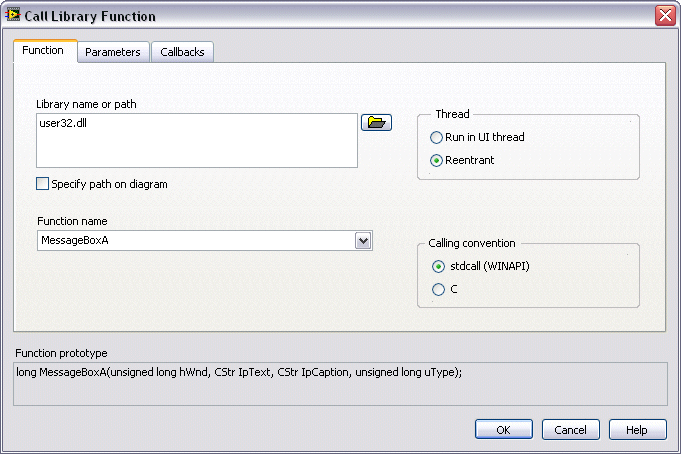

MessageBox uses two string arguments. The SDK implements two versions of functions that use string arguments, a Unicode version and an ANSI version. One of the items in the Requirements section of the MessageBox documentation says, �Unicode: Implemented as Unicode and ANSI version on Windows.� You can distinguish the two versions in the DLL because each has a W (Unicode) or an A (ANSI) appended to the end of the function name. winuser.h contains the following code:
#ifdef UNICODE
#define MessageBox MessageBoxW
#else
#define MessageBox MessageBoxA
#endif // !UNICODE
The preceding code defines MessageBox to be either MessageBoxA or MessageBoxW, depending on whether the application is a Unicode application. In effect, a MessageBox function does not exist in user32.dll. Instead, user32.dll contains a function MessageBoxA and a function MessageBoxW. In most cases in LabVIEW, you use the ANSI version of the function because the LabVIEW strings are based on ANSI, not Unicode. For this example, you use the MessageBoxA function.
Now that you are familiar with many aspects of the Win32 API, you can configure a LabVIEW Call Library Function Node to call the MessageBox function. Remember that you must use the Standard (__stdcall) calling convention in calls to any function in the Windows SDK.
The following front panel shows a correctly configured instance of the Call Library Function Node. Make your Call Library Function dialog box match the settings in the graphic.

The following block diagram shows a VI designed to call the Win32 API. Configure your block diagram to match the following block diagram.
The VI generates the following message box.